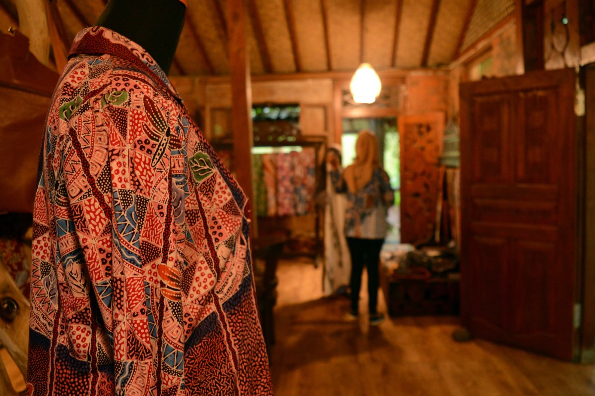

TOKO UMKM

Batik Tulis Sumbersari
Menjual batik khas Bondowoso dengan motif yang cukup beragam. Bahan yang digunakan adalah jenis kain katun dan sutera asli tenun bukan mesin(ATBM)
Alamat : Desa Sumbersari, Maesan, Bondowoso
Kontak : 085789234726
|
Batik adalah kain tradisional khas Indonesia. Salah satunya adalah batik tulis bermotif tanaman singkong khas Bondowoso, Jawa Timur.
Batik tersebut kerap disebut batik Singkong Maesan atau batik Sumbersari. Asal tahu saja, Maesan adalah nama sebuah kecamatan di Bondowoso. Sedangkan Sumbersari merupakan nama sebuah desa di Kecamatan Maesan.
Salah satu perajin batik Singkong Maesan adalah Yuke Yuliantaries di Bondowoso. Usaha ini sudah berumur 25 tahun.
Kini di bawah kendali Yuke, batik tulis Sumbersari lebih terlihat modern dari segi motif dan warna. Pria 34 tahun ini menggabungkan motif singkong yang menjadi kekhasan batik ini dengan motif lain, baik motif kuno maupun motif kontemporer. Yuke mengusung konsep pemasaran bertajuk one product one design. Strategi ini mendapat sambutan positif dari pasar. batik ukuran 2 meter (m)-2,5 m dipatok sesuai jenis kainnya. Batik berbahan katun dibandrol Rp 300.000-Rp 1 juta per helai. Sementara yang berbahan sutera biasa Rp 700.000-Rp 2 juta. Adapun batik dari bahan sutera kualitas bagus Rp 1 juta-Rp 5 juta per helai. Dalam sebulan, 50 karyawan Yuke biasa memproduksi 200 helai batik. Omzet perbulan nya Rp 75 juta hingga Rp 100 juta. |
 Batik Bermotif Daun SingkongDibuat menggunakan kain katun berkualitas Harga : Rp. 330.000 |
 Batik Bermotif CampuranDibuat menggunakan kain katun berkualitas Harga : Rp.390.000 |
 Batik Bermotif Daun SingkongDibuat menggunakan kain katun berkualitas Harga : Rp.380.000 |
 Batik Bermotif Daun SingkongDibuat menggunakan kain katun berkualitas Harga : Rp. 350.000 |